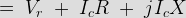

Ferranti Effect in Power System
In general practice we know, that for all electrical systems electric current flows from the region of higher potential to the region of lower potential, to compensate for the electrical potential difference that exists in the system. In all practical cases the sending end voltage is higher than the receiving end, so electric current flows from the source or the supply end to the load. But Sir S.Z. Ferranti, in the year 1890, came up with an astonishing theory about medium distance transmission line or long distance transmission lines suggesting that in case of light loading or no load operation of transmission system, the receiving end voltage often increases beyond the sending end voltage, leading to a phenomena known as Ferranti effect in power system.
Why Ferranti Effect occurs in a Transmission Line?
A long transmission line can be considered to composed a considerably high amount of capacitance and inductor distributed across the entire length of the line. Ferranti Effect occurs when electric current drawn by the distributed capacitance of the line itself is greater than the electric current associated with the load at the receiving end of the line( during light or no load). This capacitor charging electric current leads to voltage drop across the line inductor of the transmission system which is in phase with the sending end voltages. This voltage drop keeps on increasing additively as we move towards the load end of the line and subsequently the receiving end voltage tends to get larger than applied voltage leading to the phenomena called Ferranti effect in power system. It is illustrated with the help of a phasor diagram below.
Thus both the capacitance and inductor effect of transmission line are equally responsible for this particular phenomena to occur, and hence Ferranti effect is negligible in case of a short transmission lines as the inductor of such a line is practically considered to be nearing zero. In general for a 300 Km line operating at a frequency of 50 Hz, the no load receiving end voltage has been found to be 5% higher than the sending end voltage.
Now for analysis of Ferranti effect let us consider the phasor diagrame shown above.
Here Vr is considered to be the reference phasor, represented by OA.

![\;[\;Since\;X\;=\;\omega L\;]\;](7.png "\;[\;Since\;X\;=\;\omega L\;]\;")
This is represented by the phasor OC.
Now in case of a long transmission line, it has been practically observed that the line electrical resistance is negligibly small compared to the line reactance, hence we can assume the length of the phasor Ic R = 0, we can consider the rise in the voltage is only due to OA - OC = reactive drop in the line.
Now if we consider c0 and L0 are the values of capacitance and inductor per km of the transmission line, where l is the length of the line.

Since, in case of a long transmission line, the capacitance is distributed throughout its length, the average electric current flowing is,

Thus the rise in voltage due to line inductor is given by,


From the above equation it is absolutely evident, that the rise in voltage at the receiving end is directly proportional to the square of the line length, and hence in case of a long transmission line it keeps increasing with length and even goes beyond the applied sending end voltage at times, leading to the phenomena called Ferranti effect in power system.
 by
by